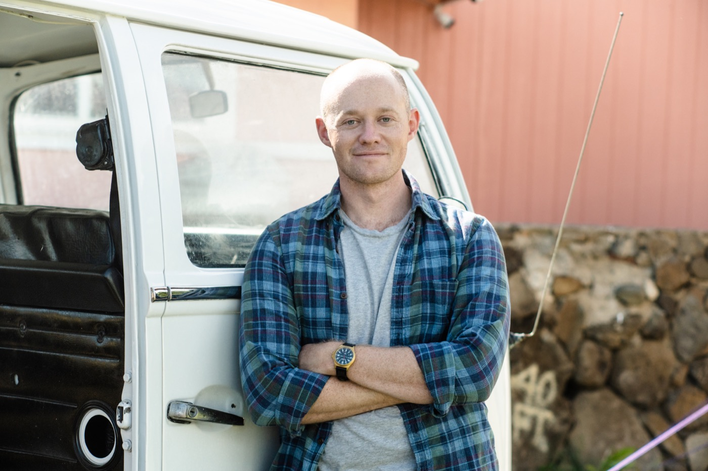

ABOUT
OWEN EDDY
Composer, arranger & audio engineer
Owen Eddy is a composer, arranger, and audio engineer specializing in film and new music. He founded ScoreStems to provide music and audio services for independent filmmakers and small to midsize productions.
His work spans original musical scores, dialogue editing, foley, sound design, mixing, and custom sound packs shaped around each project.
His music has been described as having a “refreshing aura of optimism and openness” by Michael Parloff, retired principal flutist of the Metropolitan Opera Orchestra, and as “attention-grabbing” and “clever” by Wolfram Koessel, cellist of the American String Quartet.
More about Owen at oweneddy.com ↗MUSIC & SOUND
For independent film
and small to midsize productions.
- Original musical score
- Dialogue editing
- Foley & sound design
- Mixing
- Custom sound packs
GET IN TOUCH
For projects and enquiries
scorestems@gmail.com